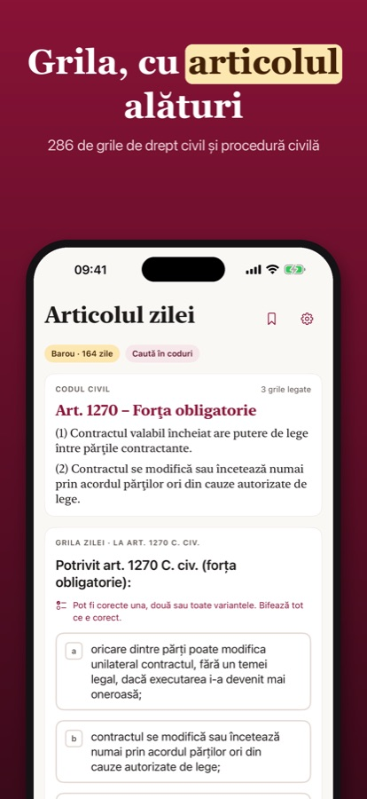
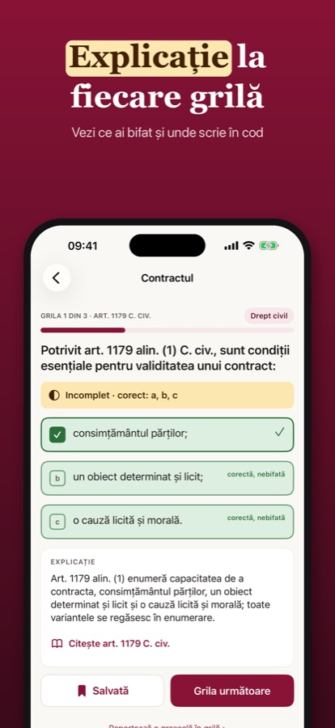
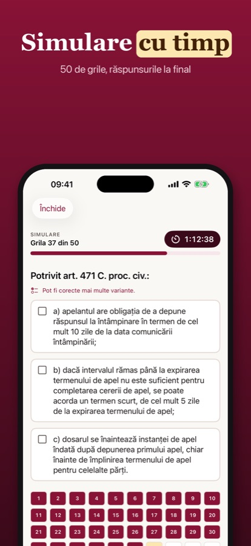

Grile de drept civil și procedură civilă scrise de noi, după textul codurilor. Fiecare grilă are explicație și te duce cu o atingere la articolul pe care îl verifică. Pot fi corecte una, două sau toate variantele.



Aplicația pentru iPhone apare în curând în App Store (România).
Stagiar nu este o aplicație oficială de examen și nu aparține UNBR, INM sau altei instituții. Nu folosim grile din examenele anterioare. Aplicația este pentru exercițiu și nu oferă consultanță juridică.